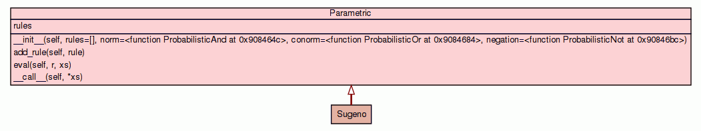

Class Parametric
source code

Basic Parametric controller
This class implements a standard parametric (or Takagi-Sugeno) controller. A
controller based on fuzzy logic has a somewhat complex behaviour, so it is
not explained here. There are numerous references that can be consulted.
It is essential to understand the format that decision rules must follow to
obtain correct behaviour of the controller. A rule is a tuple given by:
((mx0, mx1, ..., mxn), (a0, a1, ..., an))
where mx0 is a membership function of the first input variable, mx1
is a membership function of the second input variable and so on; and a0
is the linear parameter, a1 is the parameter associated with the first
input variable, a2 is the parameter associated with the second input
variable and so on. The response to the rule is calculated by:
y = a0 + a1*x1 + a2*x2 + ... + an*xn
Notice that mx's are functions not fuzzy sets! They will be applied to
the values of the input variables given in the function call, so, if they
are anything different from a membership function, an exception will be
raised. Please, consult the examples to see how they must be used.
|
|
__init__(self,
rules=[],
norm=<function ProbabilisticAnd at 0x886a41c>,
conorm=<function ProbabilisticOr at 0x886a454>,
negation=<function ProbabilisticNot at 0x886a48c>)
Creates and initializes the controller. |
source code
|
|
|
|
|
|
|
|
|
|
eval(self,
r,
xs)
Evaluates one decision rule in this controller |
source code
|
|
|
|
|
|
Inherited from object:
__delattr__,
__getattribute__,
__hash__,
__new__,
__reduce__,
__reduce_ex__,
__repr__,
__setattr__,
__str__
|
|
|
rules
Property that returns the list of decision rules.
|
|
Inherited from object:
__class__
|
__init__(self,
rules=[],
norm=<function ProbabilisticAnd at 0x886a41c>,
conorm=<function ProbabilisticOr at 0x886a454>,
negation=<function ProbabilisticNot at 0x886a48c>)
(Constructor)
| source code
|
Creates and initializes the controller.
- Parameters:
rules - List containing the decision rules for the controller. If not given,
an empty set of decision rules is used.norm - The norm (and operation) to be used. Defaults to Probabilistic
and.conorm - The conorm (or operation) to be used. Defaults to Probabilistic
or.negation - The negation (not operation) to be used. Defaults to
Probabilistic not. - Overrides:
object.__init__
|
|
Adds a decision rule to the knowledge base.
It is essential to understand the format that decision rules must follow
to obtain correct behaviour of the controller. A rule is a tuple given
by:
((mx0, mx1, ..., mxn), (a0, a1, ..., an))
where mx0 is a membership function of the first input variable,
mx1 is a membership function of the second input variable and so on;
and a0 is the linear parameter, a1 is the parameter associated
with the first input variable, a2 is the parameter associated with
the second input variable and so on.
Notice that mx's are functions not fuzzy sets! They will be
applied to the values of the input variables given in the function call,
so, if they are anything different from a membership function, an
exception will be raised. Please, consult the examples to see how they
must be used.
|
|
Evaluates one decision rule in this controller
Takes a rule from the controller and evaluates it given the values of
the input variables. The format of the rule is as given, and the
response to the rule is calculated by:
y = a0 + a1*x1 + a2*x2 + ... + an*xn
- Parameters:
r - The rule in the standard format, or an integer number. If r is
an integer, then the r th rule in the knowledge base will be
evaluated.xs - A tuple, a list or an array containing the values of the input
variables. The dimension must be coherent with the given rule. - Returns:
- This method evaluates each membership function in the rule for each
given value, and and 's the results to obtain the condition. If
the condition is zero, a tuple (0.0, 0.0) is returned. Otherwise,
the result as given above is calculate, and a tuple containing
``(condition, result) (the membership value associated to the
condition and the result of the calculation) is returned.
|
|
Apply the controller to the set of input variables
Given the values of the input variables, evaluates every decision rule,
and calculates the weighted average of the results. Returns the response
of the controller.
- Parameters:
xs - A tuple, a list or an array with the values of the input variables. - Returns:
- The response of the controller.
|